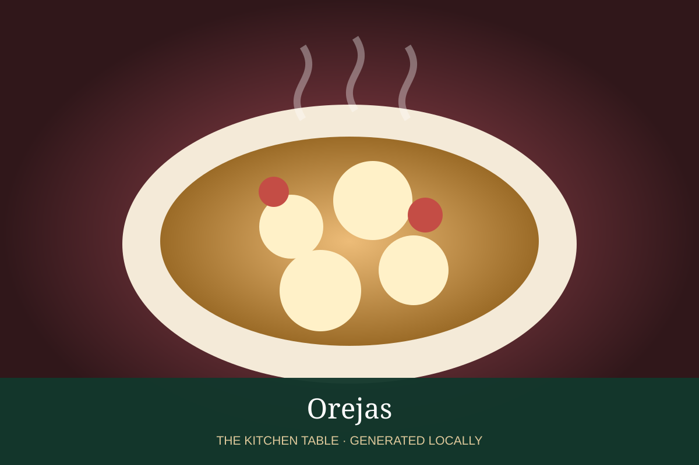

MEXICAN · DESSERTS & DRINKS
Orejas
Mexican bakery palmiers with crisp caramelized layers and a distinctive ear shape.

Ingredients
- 1 lb puff pastry
- 3/4 cup sugar
- 1 tsp cinnamon
Method
- Mix sugar and cinnamon and coat the work surface generously.
- Roll pastry lightly in sugar, fold both long edges toward the center twice, then fold together.
- Slice into ears and place on a lined pan.
- Bake at 400°F, turning once, until crisp and caramelized.